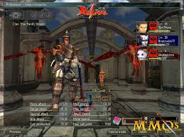
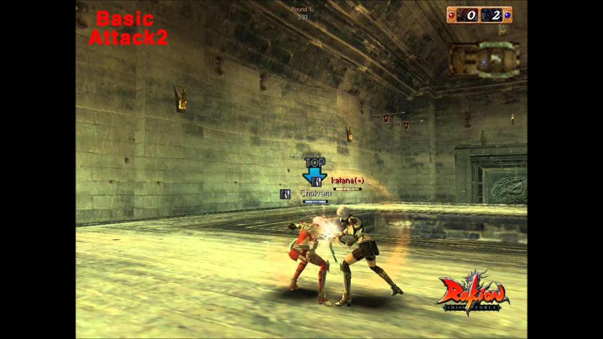
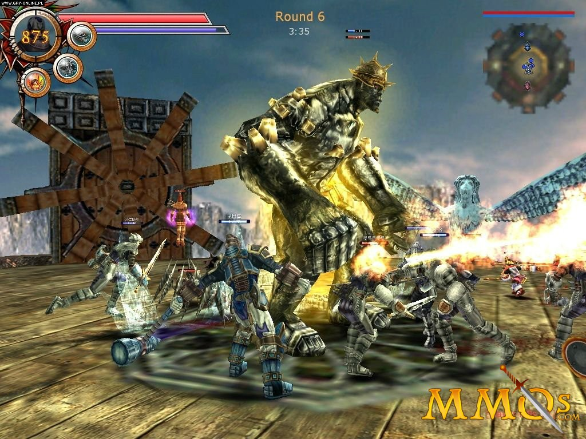
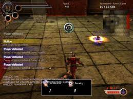

1. Planning

Rakion was conceived as a fast-paced, 3D action multiplayer game focused on real-time combat, character diversity, and strategic map control. Developed by Softnyx, the game aimed to deliver an accessible yet competitive experience for players worldwide.
- Genre: Action / Strategy / Multiplayer Online
- Core Vision: Combine arcade-style combat with RPG-like character progression
- Target Audience: Teens and young adults interested in competitive PvP
- Platform: Windows PC (DirectX 9.0+ required)
- Initial Release: Early 2000s (South Korea)
2. Pre-production

During pre-production, the Softnyx team defined the game’s core mechanics, visual style, and technical requirements. They chose a stylized 3D aesthetic to ensure performance on low-end hardware while maintaining visual clarity.
- Created initial character concepts: Warrior, Mage, Archer, Assassin
- Designed map layouts focused on balance and tactical depth
- Selected DirectX 9.0 as the graphics API for broad compatibility
- Planned server architecture for real-time multiplayer synchronization
- Decided against complex storylines to prioritize fast-paced gameplay
3. Production

The production phase involved coding, asset creation, animation, and network implementation. Rakion was built using a custom C++ engine optimized for low-latency multiplayer combat.
Engine
Custom C++ engine with DirectX 9.0 integration
Art
Low-poly 3D models with hand-painted textures
Networking
Client-server model with prediction & lag compensation
Audio
Dynamic sound effects and character voice lines
4. Testing

Rigorous testing ensured stability across a wide range of hardware configurations. Softnyx prioritized performance on minimum-spec systems while optimizing for higher-end setups.
System Requirements
| Component | Minimum | Recommended | Optimal |
|---|---|---|---|
| OS | Windows 98 / ME / 2000 / XP | Windows XP | Windows XP or newer |
| CPU | Pentium III 800 MHz | Pentium III 1.4 GHz | Pentium IV 2 GHz+ |
| RAM | 256 MB | 256 MB | 512 MB+ |
| GPU | GeForce 2 MX / Radeon 9200 | GeForce 4 MX / FX 5200 / Radeon 9500 | GeForce 3 Ti / FX 5700+ / Radeon 9600+ |
| Resolution | 640×480 | 800×600 | 1024×768+ |
| FPS (avg) | 25 | 40 | 70 |
⚠️ Note: NVIDIA GeForce cards are strongly recommended. Avoid TNT, Intel, Rage, or Matrox GPUs due to compatibility issues.